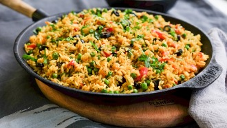
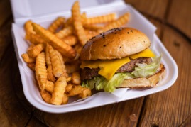
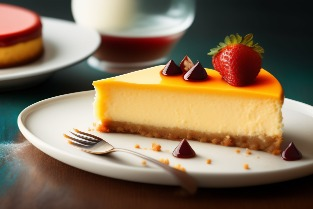

¡Explora el frescor en cada bocado con nuestras irresistibles ensaladas!
Desde clásicas hasta creativas, descubre combinaciones
vibrantes que deleitan el paladar. Perfectas para mantenerse
saludable o disfrutar como plato principal.
¡Bienvenidos a un festín de frescura y sabor en nuestra sección de ensaladas!

¡Sumérgete en el mundo de los arroces con nuestra
selección de recetas extraordinarias!
Desde clásicos risottos hasta exquisitas paellas,
explorarás sabores y texturas que te transportarán
a lugares lejanos. Encuentra la inspiración
perfecta para tus comidas con nuestras propuestas
variadas y deliciosas. ¡Bienvenidos a la sección
de arroces, donde cada grano cuenta una historia de sabor!

¡Bienvenidos a nuestra vibrante sección de carnes veganas!
Descubre el arte de crear platos deliciosos y
llenos de textura sin necesidad de ingredientes
de origen animal. Desde hamburguesas jugosas hasta
albóndigas irresistibles, te invitamos a explorar
el mundo apetitoso de las carnes veganas.
¡Sabores auténticos y sin compromisos éticos!
Sumérgete en una experiencia culinaria que celebra
el poder de la cocina basada en plantas.
¡Bienvenidos a la revolución vegana en nuestra sección de carnes!

¡Endulza tus momentos con nuestra encantadora sección de postres!
Deléitate con delicias sin lácteos ni ingredientes de
origen animal que satisfacen tu dulce antojo de manera
consciente y deliciosa. Desde pasteles esponjosos hasta
helados cremosos, descubre la magia de los postres
veganos que respetan a los animales y despiertan tus
papilas gustativas. ¡Bienvenidos a un festín dulce y
compasivo en nuestra sección de postres veganos!
 on egin!
on egin!